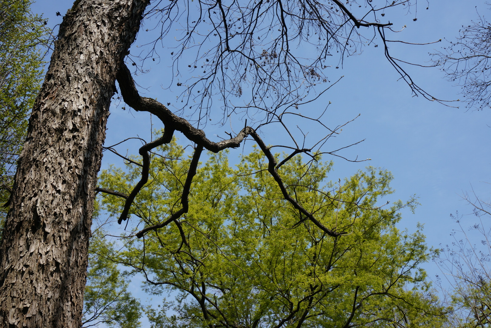
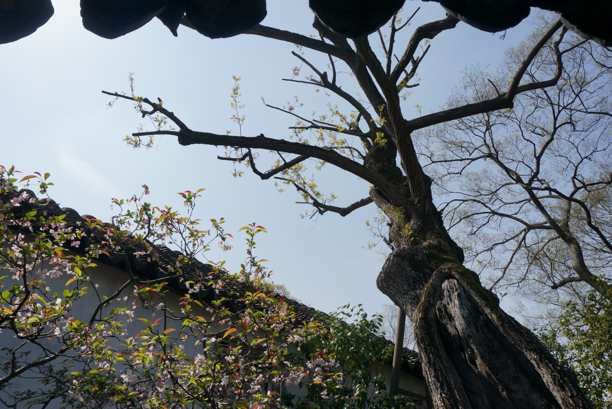
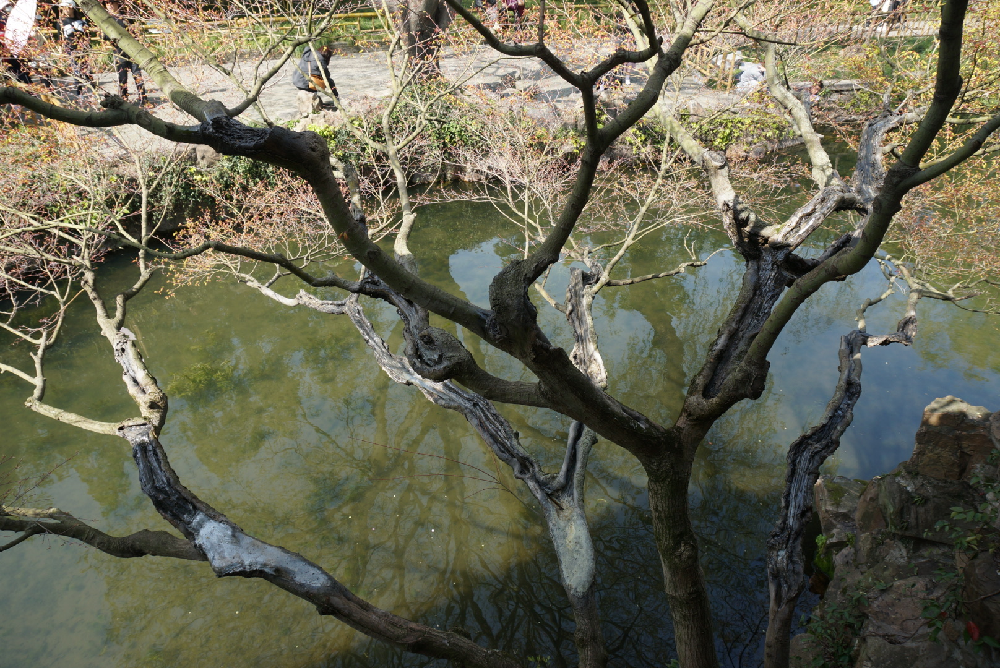
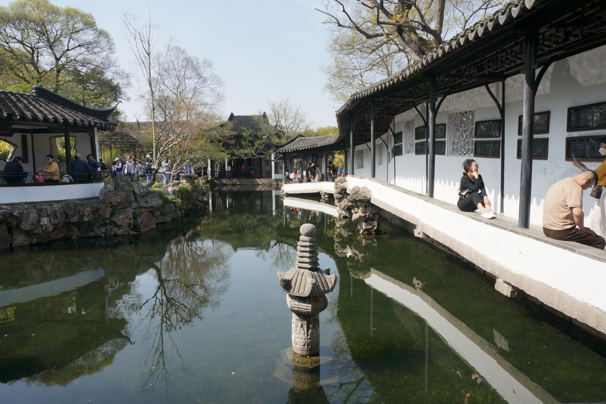
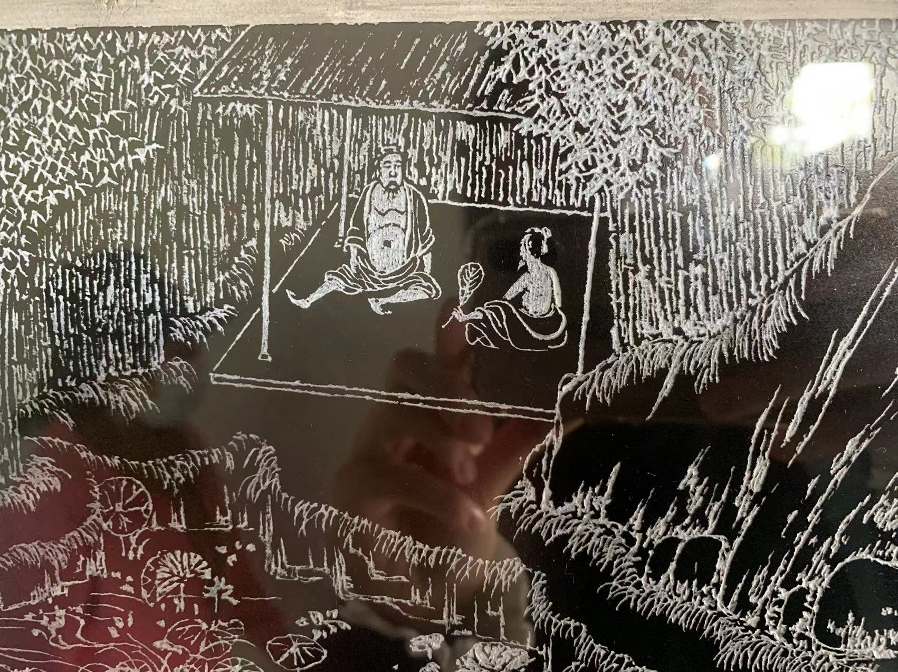

拙政园游记
昨游拙政园。周二人依旧满当，多为学生、游客、老年人。恰逢春日淡季，票价70，略贵，但景值。园内牌匾多后期仿制，字迹清晰，和古建筑不在同一时代，终究是新，少了岁月痕迹，过于现代，有种“（新建）老街”店面招牌的感觉，让人出戏。园里还有一股大煞风景的油漆味。
现从以下几个方面作感想：
自然
重头戏当然是植被山石。园里树不少，都很老，叫不上来/认不出来的统一标记为“古树名木，”真真希望能更走心的给个具体名目。我爱抬头看树枝，树们长那么多年不死不被砍不容易，应当抬头仰望表示敬意。有趣的是不同生命时节植物的并置。每一片树叶都有自己该绿的季节。我看到了枯黑的银杏枝（？）和刚抽芽的绿树的并置。黑色是鲜明、有棱角的前景，成片的嫩绿芽是后景，相交织构成舒畅的天幕。路边是各色花草、杜鹃、竹子、海棠、报春花。杜鹃花瓣些许耷拉，可能缺水。樱花、海棠正谢，一地、一池地掉花瓣，看花瓣飘下来很惬意。环卫脚踩水泥船，在池里捞花叶，自成一景。

生机
春日生机自不说，印象深刻的是一老树，中间空心，百年岁数。枝上依旧抽芽，路过的阿姨评“树靠一张皮。”正解。

生机还在池底。我看见不下4种不同的水草，他们是水下的绝对优势物种。难得池水那么清澈，能让人看得出神——水草的世界简直梦幻。饱满、轻盈的漂浮感，同时餐条鱼把它们当客厅，一条一条黑条子游来游去，自在。水里还有俩鸭，十分干净，不愁吃。

盆景也同样有生机，从扭曲的枝干中可以感受到生命的流动与生长，力量顺着枝干流转。
流线型
最漂亮的是水上游廊，架在假山石上，高高低低，颇具流线感。虽是人工建筑，但是和谐地与池子融为一体，同时给池水带来动感。

屋顶上的梁和瓦也有流线型，几乎是哥特建筑中三叶草拱的形状，瓦片服服帖帖地依着木梁，呈现的感觉也是柔软的。另一方面，灰白粗糙的瓦面不失坚固的、耐风雨的质感。圆润的隧道状廊顶同样有引导的作用，引导游人向前走。
可居可游可展
不能忽略的一点是，这是人家的院子！现在园里也开放了居住区，分为男厅、女厅和正厅。只有大厅可以参观，两侧偏房和楼上暂不开放，要看的话可以去震泽师俭堂。居住区没有院子大，环境是封闭的，虽有天井但不明朗，至少没有隔壁天王府采光好。也许是已经有了大院了，居室不必布置太多植被，也可能人白天大多在院子里吧。
有趣的是居室的围墙有两层花窗，都高高地在人可以抬头看见的地方，算作是和院子联通的工具。
院子本身有许多建筑可居，多为会客、书房功能。若住在里面，也可，但是夜里不免有些凄冷。
印象最深的是塔影亭（维修中）。建在小角落，由假山石构成通向亭子的小径，有一种西方精灵王国的感觉。亭子四面花窗，八角宝塔形状。花窗纹样简单，亭子通透。
最好的参观方式莫过于把院子当成自己家，席地而坐，吃喝休息，或像有生气的青年一样，爬上山石，坐着说笑。
园里亦可展。游廊内有碑刻展出，字迹隽秀，画面生活感十足（有脚夹蒲扇），可以想象为在开放的、自然的会客室里办展。

现代感/时代感
不仅体现在有色玻璃镶嵌的花窗、加上铁艺围栏的石板桥，还体现在仿制的牌匾、夜游模式的现代化运营上。
肉眼可见历代“主人”在原有基础上增加的东西。
参观者也很现代，不少身着汉服的摆拍/打卡青年。很高兴看到古迹有人关注，但更希望是有质量的关注，面对景观的沉浸式享受、感悟，而不是为了拍照而拍照，为了打卡而来。
整体感
开放居室之后，对居住者生活的整体感知更强烈了。
游记完。希望对得起票价。